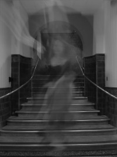
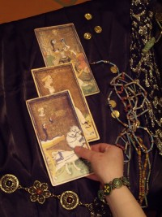
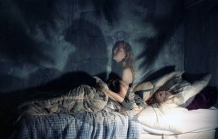

Cuando la ciencia comenzó a buscar evidencias para sustentar lo paranormal, los muertos dejaron de hablar, la telepatía sufrió un interminable bloqueo, las tablas de Ouija se paralizaron y explicaciones científicas y denuncias de fraude comenzaron a reemplazar la magia. Aquello inició oficialmente en 1882, cuando en el Reino Unido un grupo de científicos fundó La Sociedad de la Investigación Psíquica para descubrir las pruebas detrás de todo lo que llamaban eventos psíquicos o paranormales. En la actualidad, sin embargo, continuamos sin descubrir evidencia alguna de la existencia de estos nuevos “misterios”. Cada cierto tiempo escuchamos o leemos alguna otra historia que parece confirmar la realidad de un monstruo de pié grande, un mensaje telepático o la presencia de muertos y fantasmas; pero al final, nada.
Curiosamente, las historias mueren luego de ser explotadas por la prensa amarilla e ingeridas por el público. Nos quedamos esperando análisis por científicos en universidades y laboratorios, su publicación en un diario importante y el enamoramiento exagerado de la prensa hacia tan fantástica evidencia. Pero nada de eso ha ocurrido. ¿Aún?
Pues es otra de las respuestas que se escuchan en defensa de lo psíquico: Todavía no tenemos la tecnología necesaria para confirmar lo paranormal. Las excusas se mueven con la misma cadencia de “ausencia de evidencia no significa prueba de inexistencia”, o “la ciencia no lo puede demostrar todo”.
¿Qué te puedo decir?
La ciencia no es una dama con un plan bajo la manga, tampoco tiene propósitos específicos. Se mueve de acuerdo con las necesidades humanas y las evidencias encontradas y confirmadas y sus descubrimientos están atados a las culturas que los producen. Por lo tanto, los caminos son variados, cambiantes, inesperados pero a la vez, tantas veces predecibles. No sabíamos lo que era una neurona pero eso no quiere decir que dejáramos de pensar y sentir; no fue hasta 1838 que Theodore Schwann y Matthias Schleiden propusieron que la célula era la unidad funcional básica de todos los seres vivos, aquel estudio derivó en muchos otros que hoy nos regalan, gracias en gran parte a la evolución tecnológica, moléculas tan básicas como el ARN. Quarks y Higgs fueron propuestos en los años sesenta del siglo pasado y progresivamente descubiertos. La ciencia no lleva un plan, en esa nave los descubrimientos son el timón y la cultura es guía y muchas veces semáforo. Con el tiempo, hemos visto los caminos científicos crecer con explicaciones basadas en las evidencias y sus aplicaciones; lo mismo no ha ocurrido con lo paranormal.

Y no ha sido por falta de estudio. En 1957, J.B. Rhine hizo otro intento dentro de la parapsicología con cartas Zener y experimentos controlados. Su trabajo era considerado creíble y hasta llevó reconocimiento al campo por parte de la Asociación Americana para el Avance de la Ciencia (AAAS, que publica la revista Science). El problema estuvo en los resultados, específicamente en una clave esencial dentro de la aceptación de cualquier investigación científica: los experimentos no pudieron ser repetidos.
Después de Rhine, la Universidad de Princeton se integró en el tema con un programa ideado por Robert Jahn en 1979. Se llamó el Laboratorio de Ingeniería para la Investigación de Anomalías, PEAR en inglés, y estuvo funcionando hasta el año 2007, generando números aleatorios en los experimentos para ver si eventos psíquicos podrían afectar los resultados. Sin embargo, no obtuvieron evidencia alguna y cerraron.
Otros intentos aparecieron aquí y allá, algunos en Estados Unidos con objetivos militares, liderados por los físicos Russell Targ y Harold Puthoff del Instituto de Investigación de Stanford, igualmente, las evidencias brillaron por su ausencia.
Más de un siglo investigando eventos extraordinarios sin descubrir ni siquiera una evidencia ordinaria, una aplicación manifiesta. Pero se continuó intentando. De hecho, la parapsicología fue muy popular en las últimas décadas del siglo pasado con instituciones generando investigaciones sobre la conducta psíquica y ese “potencial” humano que dice explotar. Por supuesto, mientras menos evidencias eran reveladas, más complejas se volvían las explicaciones para confirmar la existencia de lo paranormal. De repente, no era el experimento en sí, sino que no existen aún los medios necesarios para elaborar un apropiado experimento.

James Randi no se creía ese cuento. Por eso decidió organizar una fundación donde se ofrecía dinero a cualquiera que pudiese demostrar, bajo el proceso de experimentación, que poseía poderes psíquicos. Randi inició la propuesto con 10,000 dólares, hoy regalan un millón; hasta el momento, nadie se ha ganado esa lotería.
Aún así, existen miles de personas estudiando apariciones de fantasmas, fincas poseídas por espíritus, castillos repletos de misterios, lugares que deben ser exorcizados, que buscan agua con ramas, son secuestrados por extraterrestres, dicen poseer súper poderes, venden su capacidad para ver el futuro y sus pociones para sanar. Todo fuera de la ciencia, ya que sus resultados no pasan el método científico, tampoco van más allá de la mera anécdota y el deseo de creer.
Yo también deseo creer. Yo también quisiera hablar con personas que han muerto, me encantaría encontrar vida más allá, usar pociones para salvar vidas enfermas. Todos tenemos nuestra idea particular del ‘cielo’; la mía siempre termina como lo que pienso es, una quimera producto de mi imaginación.
Siempre he pensado que si personas con súper poderes existieran el mundo sería sencillamente distinto. Si los fenómenos paranormales se evidenciaran de formas menos caprichosas, la vida de todos cambiaría. Se terminarían las loterías ya que todos sabrían las respuestas, las comunicaciones con los seres queridos muertos estarían adheridas a las sociedades y sus sistemas económicos, con ofertas de toda una experiencia emocional y visual con tu ser querido, una cita directa cada martes, los jueves tenemos ofertas, dos seres queridos por el precio de uno. La telepatía obligaría a todos a usar ciertos instrumentos para evitar que los telépatas nos lean los pensamientos, los masajes en el ki, chi o como quieras llamarlo, eliminarían la necesidad de cualquier droga contra el dolor, haciendo al Reiki la medicina del momento y los remedios herbales y la homeopatía los reyes y las reinas de la salud. Las pociones alternativas terminarían con todas las enfermedades y condiciones negativas en los animales del planeta. Desaparecería la necesidad por cualquier tipo de medicina.
Desafortunadamente, no es para nada lo que vemos. La gente tiene que quemarse las pestañas, como dicen, para comprender, descubrir y producir drogas para mejorar a los enfermos. Más allá de que la medicina sea costosa o no (lo cual da para otro tema), es lo único que hoy nos arregla. No vamos a un curandero cuando el hígado nos falla, cuando la glucosa enloquece, cuando el corazón se detiene o el cerebro se inunda; aún cuando la medicina en cuestión no opera como quisiéramos, la tomamos pues es lo que hay. Lo otro, desafortunadamente, no funciona. Y créanme, yo también sería la primera en fila si existiera un rayo diminuto de confianza hacia estas pseudociencias, yo también quisiera que funcionasen…
Dame datos
Algunos pedacitos de información del mundo paranormal: Los muertos no se dejan escuchar bien, dan respuestas cuadriculadas, generalizadas e inútiles, como el horóscopo, usan palabras con las que el humano promedio se puede identificar. Para que un telépata te diga lo que el otro está pensando, o tiene que hacer trampa o parece que sencillamente está adivinando. Los que leen las cartas, las tazas de café, la ceniza del cigarro, el Tarot, las piedras chinas y el I-ching, usan el mismo método que los demás magos, investigan la forma de engañar, saben lo que deseas escuchar, descubren la mejor forma de hacer preguntas y te leen el rostro, porque tú también quieres ser engañado, tú quieres que te digan lo que estás pagando por escuchar y por eso las cosas siguen ocurriendo.
Pero son las excusas las que sobresalen. Profetas del futuro que no pueden acomodar sus paupérrimas vidas, no saben el número ganador ni para ellos ni para ti, no pueden leer las mentes de los que aman ni de los que odian, no han conseguido buscar otra profesión más respetable que el fraude; los más ingenuos se creen ellos mismos sus cuentos, algunos más han conseguido amasar fortunas. Pero todo queda ahí. Aparentemente, no es fácil para los muertos y fantasmas eso de estar apareciendo, por lo general, hay que marcarlos en las fotos para distinguirlos, para que el fenómeno no pase por una marca en la lente, una sombra del sol. Es posible pensar que estos espíritus están arriesgando o rompiendo normas para aparecer, a lo mejor son los genios del más allá, los únicos que han descubierto el túnel para regresar al planeta y asustar a todo el que cree verlos.
Por supuesto, el problema es…
Una chica me dijo una vez que los muertos se reían de mi escepticismo. “Son unos cobardes”, respondí, “no se atreven a hacerlo en mi cara”.
La ciencia detrás de los embrujos

Pero no se trata sólo de ausencia de evidencias. Muchos experimentos científicos han conseguido demostrar el mecanismo detrás de algunas de estas actividades paranormales. La Ouija, por ejemplo, si no la has jugado, se trata de una tabla con letras, la palabra ‘Sí’ y la palabra ‘No’ en ambos lados y un pequeño triángulo plástico con una lámina transparente que permite ver la letra donde se ha detenido por un segundo. Los que quieren hablar con fantasmas se sientan alrededor de la Ouija y ponen sus dedos sobre el triángulo, apenas tocándolo. Existen otros métodos, como vasos, por ejemplo, la idea es que se moverán si le pones las manos encima.
Pues bien, el físico Michael Faraday quería averiguar cómo aquello ocurría y así presentó algunas bases del poder de la sugestión. Le llamó el efecto ideomotor. Realizó experimentos sobre el poder de la sugestión y cómo muchas veces empujamos sutilmente si queremos que algo se mueva. De hecho, es uno de los elementos que hizo imprescindible la creación de un método científico, era necesario esposar nuestros deseos si queríamos obtener resultados objetivos.
Lo hacemos de forma inconsciente, esperamos que una mesa se mueva y nuestros músculos, ‘sin querer’, la mueven. Durante un evento paranormal en 1853, cuatro médicos realizaron una sesión de espiritismo experimental. Formaron grupos para el experimento y cuando le decían en secreto a la mitad de los participantes que la mesa se movería hacia la derecha mientras que a la otra mitad le decían que se movería a la izquierda, la mesa nunca se movía. Sin embargo, cuando le decían a todos que la mesa se movería en una dirección en específico, el efecto ideomotor hacía su trabajo y la mesa se movía. Ese mismo principio se aplica en la Ouija.
“Son nuestros propios músculos que están haciendo la ortografía, no los espíritus”.
Infrasonido vestido de brujo
Por otro lado tenemos el infrasonido. Hace un tiempo escribí sobre este fenómeno que ha sido registrado en la ciencia de las ‘casas embrujadas’. Una vez, el investigador Vic Tandy vio un fantasma gris en su escritorio y comenzó a preocuparse. Otro día, mientras se preparaba para un combate de esgrima puso la espada sobre el escritorio y el objeto comenzó a vibrar. Entonces Tandy cayó en cuenta, tanto el fantasma como la espada eran víctimas del infrasonido.
No podemos escuchar todas las frecuencias de los sonidos, algunas de ellas las sentimos como vibraciones. De hecho, investigaciones indican que los humanos escuchamos hasta los 20,000 Hz, pero no podemos escuchar nada debajo de 20 Hz y es a estos ruidos ‘silenciosos’ a lo que llamamos infrasonido. Más aún, el doctor Richard Wiseman explica que es posible sentir el infrasonido como ondas en el estómago o en cualquier otra parte del cuerpo. Interesantemente, estas vibraciones pueden crear sentimientos, desde el temor, la inquietud y el pánico, mucho más si el poder de la sugestión tiene un importante papel en el drama.
El infrasonido, amigos, es causado por las tormentas, el viento, patrones climáticos y también por algunos de los aparatos que utilizamos diariamente. Tandy, por ejemplo, inició su pesquisa para ver qué era lo que producía este infrasonido y descubrió que en días anteriores un nuevo ventilador había sido instalado en su laboratorio, un ventilador que emitía sonidos de unos 19 Hz. Cuando Tandy apagó el ventilador, el embrujo desapareció.
“El infrasonido hacía vibrar mis globos oculares, lo que producía imágenes que no estaban realmente allí”, explica.
El doctor Wiseman cree que estas vibraciones son responsables de la actividad paranormal en esos sitios embrujados. Por ejemplo, investigó dos lugares subterráneos con reputación de embrujo y descubrió infrasonido, ¿su fuente?, la sobrecarga de tráfico. Wiseman cree que esto explica las figuras fantasmales y los pasos espeluznantes que se han sentido en estas áreas.
El ‘Yo’, definido por la unión temporoparietal izquierda
Todas estas cosas son producidas por el cerebro, por supuesto, uno de los problemas es que muchos piensan que el cerebro es sencillamente el portal hacia lo paranormal. O como dijo una vez el doctor Eugenie de Scott: “La ciencia se limita a explicar sólo el mundo natural. La ciencia está limitada a las causas naturales. La ciencia no puede probar explicaciones que implican causa sobrenatural”.
Y así se mueven los pensamientos en varios caminos. ¿Quiere eso decir que el mundo sobrenatural y la metafísica paranormal existen pero que la ciencia nunca podrá investigarlos?, ¿o es que debemos suponer entonces que no existen y por eso la ciencia no debe investigarlos?
Cuando la persona quiere creer, creerá, hasta el punto de decir que el que no cree también está creyendo, que el escéptico sencillamente ha creado su propia realidad, que el incrédulo ha cerrado su cerebro y sólo responde ahora a las evidencias. Pues no veo nada malo en seguir las evidencias y mantener signos de interrogación a todo pensamiento mágico extraordinario sin presentaciones lógicas ni ideas críticas que expliquen sus absurdos. No sólo pruebas científicas, sencillamente aplicaciones sobre la realidad. Por ello, muchos científicos no pierden el tiempo intentando demostrar lo inexistente, precisamente, muchas de las pruebas halladas han llegado por simple casualidad.
Por ejemplo, investigadores suizos estaban estimulando eléctricamente el cerebro de un paciente epiléptico cuando de repente la mujer comenzó a decirles que estaba viendo una sombra detrás de ella, que copiaba cada movimiento que hacía hasta que en un momento la abrazaba. De hecho, cuando los médicos le dieron una tarjeta para que la leyera, la sombra intentó arrebatársela de la mano. La sombra aparece cuando se estimula la unión en el cerebro conocida como temporoparietal izquierda, que se encarga de definir el ‘Yo’ del individuo. Los médicos no están intentando demostrar que no existen los fantasmas, más bien intentan ayudar a muchas personas con enfermedades como la esquizofrenia y otros males, que son acosados permanentemente por seres extraños y voces dentro de ellos que les dicen cómo actuar.
La canalización: Un Om a los seres cósmicos
Otro gran fenómeno paranormal es la canalización. De hecho, es un término metafísico bastante antiguo utilizado para llegar al mundo de los espíritus y hablar con ellos. La idea es despejar tu mente y conectarte con seres cósmicos y dejarlos que posean tu cuerpo; es una técnica que recuerda a los chamanes y jefes de tribus antiguas, pero también algunos bien modernos como la psíquica JZ Knight quien asegura canalizar a un espíritu llamado Ramtha, un alma de la Atlántida con más de 35,000 años de edad. Desafortunadamente, Ramtha no parece tener información útil para la humanidad moderna.
Ahora bien, sentarte y ponerte a inventar que algo ha tomado posesión de tu cuerpo y comenzar a decir todo lo que se te ocurra, pues invita al fraude. No obstante, hay personas que sí se creen lo que está ocurriendo y, de acuerdo a investigaciones, se trata de algo llamado automatismo, que es un estado alterado de consciencia, donde la gente dice y piensa cosas sin estar conscientes de ello. Pero estas ideas no vienen de seres cósmicos sino que son creadas por la mente del que canaliza, por supuesto. El cerebro es capaz de inventar cualquier cosa sin ningún esfuerzo consciente. ¿Cuántas ideas no han sido inspiradas como por ‘arte de magia’? ¿Cuántas veces has tenido pesadillas o sueños diurnos totalmente extraños? No hay una personita guía en el cerebro que se encarga de todo esto, no se trata de extraterrestres ni seres cósmicos, es sólo el cerebro, que trabaja 24/7 todo el tiempo.
Ni explicación, ni evidencias, ni utilidad, ni estadísticas
Histerias masivas, corrientes de aire, problemas con la cámara de fotos, envenenamientos por óxido de carbono, parálisis del sueño, iones provocados por radiaciones solares u otras causas y todo lo desconocido y extraño en la física cuántica son usados para explicar fenómenos paranormales por todo el mundo. Muchos de ellos no son resueltos por estos mecanismos porque son causados por puros trucos de magia y fraudes. Precisamente, magos como James Randi han conseguido desvelar estos misterios.
Lo paranormal y la metafísica no han sido sólo inexplicables, carentes de evidencias y de medidas objetivas sino que tampoco han demostrado ninguna utilidad más allá del efecto placebo que experimenta el paciente que desea creer en cualquiera de sus numerosas variedades y de servir como el ingreso en distintos niveles de muchas familias en el planeta.
Ahora bien, si lo que más deseas desde el fondo de tu cerebro es creer, entonces no habrá evidencia ni explicación válida por más científicas que sean, que te convenzan de lo contrario. No obstante, si la duda ha hecho huecos en tu apreciación sobre el tema, la ciencia y el escepticismo pueden ayudarte a observar una objetiva vista panorámica.
Una vez escuché a una joven mujer decir en un programa de radio: “¡El problema es intentar explicar lo paranormal, lo paranormal no tiene explicación!”
¿Y desde cuándo eso basta?
Volver al índice de artículos
Comentarios
Comments powered by Disqus